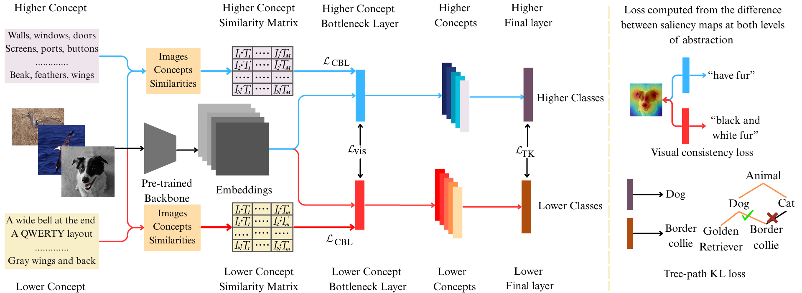
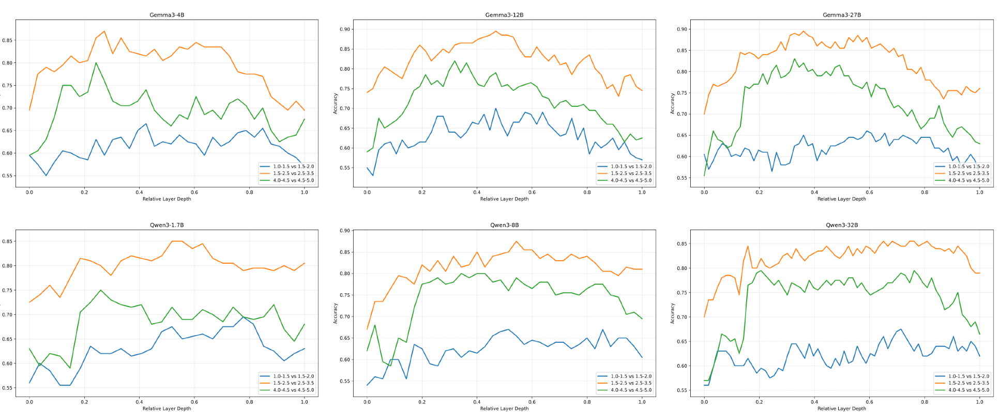
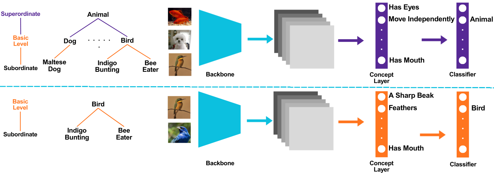
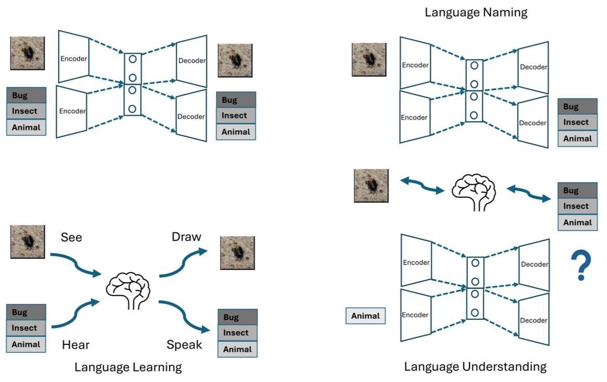

Explain in Abstractions: Hierarchical, Interpretable, Label-Free Concept Bottleneck Model
.
PreprintI am an incoming Research Fellow at the University of Warwick. My research focuses on LLM-based agents, emergent capabilities, self-improvement, and metacognition, with a broader interest in understanding and evaluating the behaviour, generalisation, and robustness of foundation models. I was previously a PhD researcher in Computer Science at the University of Manchester, supervised by Prof. Angelo Cangelosi. I also hold an MSc in Advanced Computing from Kings College London and a BEng in Internet of Things from Hohai University China.

- PhD Awarded from the University of Manchester.
A full publication list is available on Google Scholar.

.
Preprint
Annual Meeting of the Cognitive Science Society, 2026.

Poster with abstract, Annual Meeting of the Cognitive Science Society, 2026.

International Conference on Neural Information Processing, 2024.